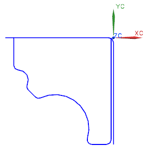
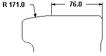
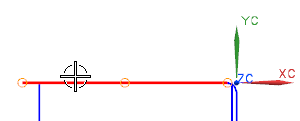
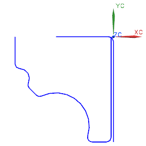

打开 ffm3_profile_4 并开始建模应用模块，如果它还没有激活的话。

选择插入→曲线→基本曲线。
您想让上端的水平直线与一条左端的圆弧相切。

在基本曲线对话框中，点击编辑曲线参数 。
由于在右端有一个6 mm 的圆角，您必须让顶部水平直线长70 mm，距离您选择位置最近的端点将会是移动的那一个 — 另一个仍保持固定。
在中点左侧选择顶端水平直线，避免选择控制点。

在长度输入框 中，键入70并回车。
